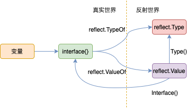

Go 语言实现——反射¶
基本使用¶

reflect 包最重要的两个数据结构就是 Type 和 Value，定义如下：
type Type interface {
Align() int
FieldAlign() int
Method(int) Method
MethodByName(string) (Method, bool)
NumMethod() int
Name() string
PkgPath() string
Size() uintptr
String() string
Kind() Kind
Implements(u Type) bool
// ...
}
type Value struct {
// 类型指针
typ *rtype
// 数据指针
ptr unsafe.Pointer
flag
}
变量通过
reflect.TypeOf、reflect.ValueOf可以反射得到Type、Value。Type是一个接口，这个接口定义了获取类型信息的各种接口，Value是个结构体，这个结构体里保存了变量的数据信息，其字段都是私有，所以得通过结构体的方法来获取数据信息。Value调用自身的Interface()方法可以将数据再反射回原始数据（interface{} 类型，通过类型断言可以回到最原始的数据）。Value调用自身的Type()方法可以获得类型信息。
反射和 interface{}¶
从 Go 语言实现——数据结构 中关于 interface{} 的实现可以看出，interface{} 是 Go 类型信息的注入点，reflect.TypeOf 和 reflect.ValueOf 的入口参数类型都是 interface{}。
TypeOf 直接返回 interface{} 的类型指针。
func TypeOf(i interface{}) Type {
eface := *(*emptyInterface)(unsafe.Pointer(&i))
return toType(eface.typ)
}
func toType(t *rtype) Type {
if t == nil {
return nil
}
return t
}
type emptyInterface struct {
typ *rtype
word unsafe.Pointer
}
ValueOf 将 interface{} 的类型指针和数据指针封装在 Value 结构体中返回。
func ValueOf(i interface{}) Value {
if i == nil {
return Value{}
}
escapes(i)
return unpackEface(i)
}
func unpackEface(i interface{}) Value {
e := (*emptyInterface)(unsafe.Pointer(&i))
t := e.typ
if t == nil {
return Value{}
}
f := flag(t.Kind())
if ifaceIndir(t) {
f |= flagIndir
}
return Value{t, e.word, f}
}
静态类型（static type）和实际类型（underlying type）¶
The static type (or just type) of a variable is the type given in its declaration, the type provided in the new call or composite literal, or the type of an element of a structured variable.
var r io.Reader
tty, err := os.OpenFile("/dev/tty", os.O_RDWR, 0)
if err != nil {
return nil, err
}
r = tty
上面的代码中：
r的（静态）类型是io.Reader，Go 会在编译期作类型检查。io.Reader是一个 interface ，运行时它在内存中是一个iface结构体，这个结构体中的类型指针指向*os.File这个实际类型（不是io.Reader），数据指针指向tty。
因此，通过类型断言，我们还可以将 r 给转换成 io.Writer 类型。
var w io.Writer
w = r.(io.Writer)